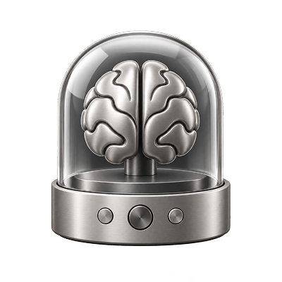
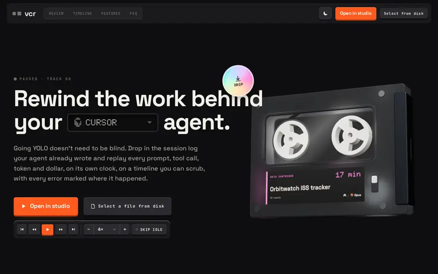

Hi! I’m Javier Alonso, a

AI Product DesignerProduct BuilderFounderSpeakerMentorSketchnoterDesign EngineerInteraction DesignerDesign TechnologistSystems thinker- AI Product Designer
- Product Builder
- Founder
- Speaker
- Mentor
- Sketchnoter
- Design Engineer
- Interaction Designer
- Design Technologist
- Systems thinker
based in Cáceres, Spain,
currently shipping AI & developer products 0→1 at
Staff Product Designer & AI/Agentic UX Lead. I specialize in extremely complex environments for developers, like HPC, CLI, AI environments and Security. I studied computer science and started as a developer before moving into design. I founded and sold my first company, grew from frontend engineering into product leadership as CEO and CPO, and spent years designing remotely for Silicon Valley companies.
Selected Work
Gordon
Docker’s AI agent
Interaction model, onboarding, and safety UX that made it acceptable to let an agent act on your machine.
69 → 119,739monthly active users · Nov 2024 → Jun 2026
MCP Toolkit & Catalog
Two releases, ~2.5× end-to-end conversion — the most attributable funnel win in the portfolio.
Docker Model Runner
Local LLMs across Desktop, CLI and Hub; he coded the Hub model cards himself.
Agentic Platform & cagent
Defined the product’s primitives and IA — sessions · sandboxes · kits.
CLI Design System
Docker’s first CLI design language — now how every team ships terminal UX.
Agents by Docker
cagent without the terminal: one mental model, outcome-first flows, and trust patterns for people who never open a CLI.
Personal Projects — solo builds & side quests

Den archived
Somewhere safe to let agents run wild — an experimental macOS app I built around Docker Sandboxes. Every coding agent gets a private microVM with its own filesystem, daemon and guarded network, so it can build, install and rewrite freely while your machine never stirs.

VCR
A VCR for your Claude Code and Codex sessions — drop in the session log and replay the whole run like a tape: every prompt, tool call, token and dollar on a scrubbable timeline, 1× to 60×. Parsed entirely in your browser; nothing uploaded, no server, no build step.
All playground
The full shelf — shipped apps, session tools, Figma plugins and terminal toys.
Let’s talk